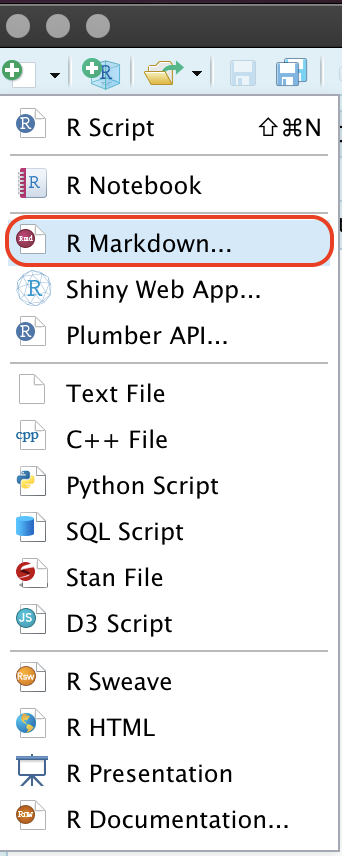

Getting Started With R Markdown
1 Objectives
This section provides some exercises to improve your understanding of R Markdown. Please see the accompanying slides for more information.
1.1 Create a new R Markdown file
We will start by creating a new R Markdown file, and set it to create an HTML document. When you save your new .Rmd file, be sure to delete all the text beneath the YAML header in your new .Rmd document
1.1.1 New File icon
We can create a new R Markdown file using the New File icon

1.1.2 File tab
We can also create a new R Markdown file in RStudio using File > New File > R Markdown…

1.1.3 Save your .Rmd file
We will need to save our .Rmd file before we can knit it, so we’ll save it in the same directory as this rmarkdown-solutions.html file.

1.2 RMarkdown: YAML
While R Markdown allows us to create a variety of documents formats, the output with the most features is HTML. HTML documents function essentially like a web page, and allow for interactive navigation and displays. This document was written in R Markdown, and we’ll be creating a similar report to keep as a reference.
1.2.1 Standard YAML Header
Our new .Rmd file should have the following information. Note that indentation and case matters in YAML formatting, so we need to pay extra attention to alignments and spelling.
---
title: "Untitled"
author: "Martin Frigaard"
date: "10/24/2020"
output: html_document
---1.2.2 Table of Contents (TOC)
Having an interactive table of contents makes it easier for readers to navigate your report. We can add a floating table of contents to our new report to the following YAML settings:
output:
html_document:
toc: yes
toc_float: trueKnit the document again and extend the view to see the floating table of contents.
1.2.3 Highlight & Themes
Highlighting and themes give us some control over the aesthetics in our reports. We can add a new theme and text highlighting to the report with the following YAML options.
output:
html_document:
toc: yes
toc_float: yes
highlight: spacelab
theme: espressoKnit the document again and extend the view to see the new theme of text highlighting.
1.2.4 Parameters
YAML parameters give us the ability to add variables we can later refer to in our document. We will add some parameters to our report to see how these can be used. Add the following code to the YAML header (at the bottom):
params:
data_dir: !r file.path("data/starwars.rds")
list_vars: !r c("films", "vehicles", "starships")These parameters will give us global control over the data we will be importing (even if that file changes in the future).
1.3 Importing and Viewing Data
It’s hard to do any analyses without data! We will load a toy dataset from the Star Wars API. Add the code below to your .Rmd file to import the StarWars data. We will also name the code chunk StarWars, because it’s the object this code creates.
```{r StarWars}
StarWars <- readr::read_rds(file = params$data_dir)
```Note that we’ve loaded these data using the parameters we’ve defined above.
1.3.1 Help files
Details about the variables in the StarWars dataset are accessible in RStudio’s help files, which we can access using ??starwars
```{r StarWars-help}
??starwars
```When we read the help file, we find there are three variables that are lists: films, vehicles, and starships. We have list-columns because the Star Wars API exports data as a JSON file, which is not tabular (like a spreadsheet).
1.3.2 dplyr::glimpse()
We can see a basic transposed display of the StarWars data with dplyr’s glimpse() function.
dplyr::glimpse(StarWars)## Rows: 87
## Columns: 14
## $ name <chr> "Luke Skywalker", "C-3PO", "R2-D2", "Darth Vader", "Leia O…
## $ height <int> 172, 167, 96, 202, 150, 178, 165, 97, 183, 182, 188, 180, …
## $ mass <dbl> 77.0, 75.0, 32.0, 136.0, 49.0, 120.0, 75.0, 32.0, 84.0, 77…
## $ hair_color <chr> "blond", NA, NA, "none", "brown", "brown, grey", "brown", …
## $ skin_color <chr> "fair", "gold", "white, blue", "white", "light", "light", …
## $ eye_color <chr> "blue", "yellow", "red", "yellow", "brown", "blue", "blue"…
## $ birth_year <dbl> 19.0, 112.0, 33.0, 41.9, 19.0, 52.0, 47.0, NA, 24.0, 57.0,…
## $ sex <chr> "male", "none", "none", "male", "female", "male", "female"…
## $ gender <chr> "masculine", "masculine", "masculine", "masculine", "femin…
## $ homeworld <chr> "Tatooine", "Tatooine", "Naboo", "Tatooine", "Alderaan", "…
## $ species <chr> "Human", "Droid", "Droid", "Human", "Human", "Human", "Hum…
## $ films <list> [<"The Empire Strikes Back", "Revenge of the Sith", "Retu…
## $ vehicles <list> [<"Snowspeeder", "Imperial Speeder Bike">, <>, <>, <>, "I…
## $ starships <list> [<"X-wing", "Imperial shuttle">, <>, <>, "TIE Advanced x1…glimpse() shows us the format and first few values of each variable in StarWars.
1.3.3 skimr::skim()
Below is a skimr::skim() view of the StarWars data. We can see each variable broken down by type, along with some summary information.
skimr::skim(StarWars)| Name | StarWars |
| Number of rows | 87 |
| Number of columns | 14 |
| _______________________ | |
| Column type frequency: | |
| character | 8 |
| list | 3 |
| numeric | 3 |
| ________________________ | |
| Group variables | None |
Variable type: character
| skim_variable | n_missing | complete_rate | min | max | empty | n_unique | whitespace |
|---|---|---|---|---|---|---|---|
| name | 0 | 1.00 | 3 | 21 | 0 | 87 | 0 |
| hair_color | 5 | 0.94 | 4 | 13 | 0 | 12 | 0 |
| skin_color | 0 | 1.00 | 3 | 19 | 0 | 31 | 0 |
| eye_color | 0 | 1.00 | 3 | 13 | 0 | 15 | 0 |
| sex | 4 | 0.95 | 4 | 14 | 0 | 4 | 0 |
| gender | 4 | 0.95 | 8 | 9 | 0 | 2 | 0 |
| homeworld | 10 | 0.89 | 4 | 14 | 0 | 48 | 0 |
| species | 4 | 0.95 | 3 | 14 | 0 | 37 | 0 |
Variable type: list
| skim_variable | n_missing | complete_rate | n_unique | min_length | max_length |
|---|---|---|---|---|---|
| films | 0 | 1 | 24 | 1 | 7 |
| vehicles | 0 | 1 | 11 | 0 | 2 |
| starships | 0 | 1 | 17 | 0 | 5 |
Variable type: numeric
| skim_variable | n_missing | complete_rate | mean | sd | p0 | p25 | p50 | p75 | p100 | hist |
|---|---|---|---|---|---|---|---|---|---|---|
| height | 6 | 0.93 | 174.36 | 34.77 | 66 | 167.0 | 180 | 191.0 | 264 | ▁▁▇▅▁ |
| mass | 28 | 0.68 | 97.31 | 169.46 | 15 | 55.6 | 79 | 84.5 | 1358 | ▇▁▁▁▁ |
| birth_year | 44 | 0.49 | 87.57 | 154.69 | 8 | 35.0 | 52 | 72.0 | 896 | ▇▁▁▁▁ |
The skimr package is great for looking at large data summaries. Read more here.
1.3.4 listviewer::jsonedit()
If you have JSON or lists (non-rectangular data) in R, sometimes these objects can be hard to visualize. The jsonedit() function from listviewer makes this easier by giving us an interactive display to click-through.
library(listviewer)
listviewer::jsonedit(listdata = StarWars, mode = "view")1.4 Caching data
When we are analyzing large datasets that take awhile to load, it might make sense to cache the data when it’s loaded into a code chunk.
We can do this by including cache=TRUE in the previous StarWars code chunk.
```{r StarWars, cache=TRUE}
StarWars <- readr::read_rds(file = params$data_dir)
```Re-knit this chunk with the new cache option.
1.4.1 Checking dataset size
We can determine the size of our dataset using object.size() from the utils package (which is loaded by default).
object.size(StarWars)## 57520 bytesAnother option is using the inspect_mem() function from the inspectdf package.
library(inspectdf)
inspectdf::inspect_mem(df1 = StarWars) %>%
inspectdf::show_plot(text_labels = TRUE,
col_palette = 1)
We can see from the data visualization that the list variables are accounting for most of the memory.
1.4.2 Caching data
Including the cache=TRUE option stores the StarWars data, so that R holds the data in memory until the StarWars import chunk is changed. Sometimes we will only want to analyze a subset of a dataset, so it makes sense to cache the larger dataset import chunk.
```{r StarWars, cache=TRUE}
StarWars <- readr::read_rds(file = params$data_dir)
```With the StarWars data cached, we can remove the list variables from StarWars and create a StarWarsSmall dataset. We saved the names of the list-columns in params$list_vars.
```{r StarWarsSmall}
StarWarsSmall <- StarWars %>% dplyr::select(-c(params$list_vars))
```Lets check the size of the new StarWarsSmall data by comparing it to the original StarWars dataset. This code chunk should look like this:
```{r inspect_mem-StarWars-StarWarsSmall}
inspectdf::inspect_mem(df1 = StarWars, df2 = StarWarsSmall) %>%
inspectdf::show_plot(text_labels = TRUE, col_palette = 1)
```
1.4.3 Cache path
When we cache data, a new folder named your-file-name + _cache is created in the same directory as our R Markdown file. We can see the rmarkdown-exercises_cache/ folder contents below:
## data
## ├── 2020-11-24-TopPharmCompRaw.csv
## ├── 2020-12-11-BioTechDrugStocks.csv
## ├── 2020-12-11-BmrmGoogle.rds
## ├── 2020-12-20-BioTechStocks.csv
## ├── 2020-12-24-BioTechStocks.csv
## ├── 2020-12-29-PricesWide.csv
## ├── 2020-12-30-PricesWide.csv
## ├── AppleMobRaw.csv
## ├── FasterCures.csv
## ├── Infected.csv
## ├── LabData.csv
## ├── LabProc.csv
## ├── SmallLabData.csv
## ├── TopPharmComp.csv
## ├── UsadaBadDates.csv
## ├── UsadaRaw.csv
## ├── VisitNAData.csv
## ├── original-starwars.csv
## └── starwars.rdsWe can change the location of the data cache by specifying cache.path either in the code chunk, or in the setup chunk.
```{r StarWars, cache=TRUE, cache.path='data/'}
StarWars <- readr::read_rds(file = params$data_dir)
```Note: you will need to make sure the cache.path folder exists, which can be solved by adding dir.create() in a code chunk above the StarWars chunk. I like using fs::dir_create(), because it checks to see if a folder exists, then creates one if it doesn’t.
If we want to add cache options to the setup chunk, it would look like this,
```{r setup, include=FALSE}
# create data folder
fs::dir_create(path = "data/")
# set chunk options
knitr::opts_chunk$set(cache = TRUE,
cache.path = "data/")
```1.4.4 Dependent chunks
Data analysis and exploration typically moves along in a (somewhat) linear fashion, which means our code chunks should be run sequentially. Sometimes this isn’t true, and we need some code chunks to depend on other, specific code chunks. In this case, we can use the dependson option in our code chunk.
In the Caching Data tab, we compared StarWars and StarWarsSmall datasets using inspect_mem() in a code chunk named inspect_mem-StarWars-StarWarsSmall. Running this code is only possible after running the code in the StarWars chunk.
We can make the inspect_mem-StarWars-StarWarsSmall dependent on StarWars by adding dependson and the code chunk name.
```{r inspect_mem-StarWars-StarWarsSmall, dependson = "StarWars"}
inspectdf::inspect_mem(df1 = StarWars, df2 = StarWarsSmall) %>%
inspectdf::show_plot(text_labels = TRUE, col_palette = 1)
```Now the inspect_mem-StarWars-StarWarsSmall will only execute after the StarWarsSmall chunk has been run.
1.5 Figures
Graphs and figures are great tools for communicating results, and we want to keep track of all the visualizations we create in our report. R Markdown comes with multiple options for controlling the size, location, and quality of images in our reports.
1.5.1 Figure size
We can adjust the size of our figures with fig.height= or fig.width=. These both take numeric values, and control the dimensions of the figure in inches. We can also control the size with out.width= and out.height=.
Below we visualize the average BMI by species and gender in the Star Wars universe. We also load the hrbrthemes package to give us more control over the aesthetics in our plot.
```{r gg_avg_bmi_spec_gend, fig.height=5.5, fig.width=8, out.width='100%', out.height='100%'}
library(hrbrthemes)
StarWars %>%
dplyr::filter(!is.na(mass) & !is.na(height) & !is.na(species)) %>%
dplyr::mutate(bmi = mass / ((height / 100) ^ 2)) %>%
dplyr::group_by(species, gender) %>%
dplyr::summarize(mean_bmi = mean(bmi, na.rm = TRUE)) %>%
dplyr::ungroup() %>%
dplyr::arrange(desc(mean_bmi)) %>%
dplyr::mutate(species = reorder(species, mean_bmi)) %>%
ggplot2::ggplot(aes(x = mean_bmi, y = species,
color = as.factor(species),
group = gender)) +
ggplot2::geom_point(show.legend = FALSE) +
ggplot2::facet_wrap(. ~ gender, scales = "free") +
ggplot2::labs(title = "Average BMI in Star Wars Universe",
subtitle = "Grouped by species and gender",
caption = "source = https://swapi.dev/",
x = "Mean BMI", y = "Species") +
hrbrthemes::theme_ipsum_rc(axis_text_size = 9,
axis_title_size = 13,
strip_text_size = 13) -> gg_avg_bmi_spec_gend
gg_avg_bmi_spec_gend
```
We can see this figure fits the page well because we are able to control the size of the height and width.
1.5.2 Figure location
Now that we’ve created a few figures, we can see how these get stored to be used in the final .html file. Much like the default cache settings, when we create graphs in R Markdown, a default folder is created that is your-file-name + _files, and a subfolder figure-html contains the images for the document.
We can see the figure we created above gg_avg_bmi_spec_gend in the figure-html folder below:
## mk00_rmarkdown-exercises_files/figure-html
## └── gg_avg_bmi_spec_gend-1.pngWe can also manually specify where we want the figures saved with fig.path=. If we’re setting a folder for the figures, we can do it in the code chunk,
```{r figure-title, fig.path="img/"}
# code to create figure...
```Or in the setup chunk (but we need to make sure the folder exists!)
```{r setup, include=FALSE}
# create image folder
fs::dir_create(path = "img/")
knitr::opts_chunk$set(fig.path = "img/")
```Most graphs also have options for saving, which we will demonstrate using the dm and starwarsdb packages to show how the Star Wars data are related to one another.
The starwarsdb package comes with a data model function (starwars_dm()), which we will pass to dm_draw() from the dm package. dm stands for ‘data model’, and this package is great for visualizing relational data
```{r StarWarsDataModel}
library(dm)
library(starwarsdb)
StarWarsDataModel <- dm_draw(dm = starwars_dm(),
graph_name = "StarWarsDataModel")
StarWarsDataModel
```We can see the individual data tables, and which keys link them together.
This graph requires some additional steps to save as a .png, but we can see we’re allowed to specify the file and folder path in the rsvg::rsvg_png() function.
# packages to export
library(DiagrammeR)
library(DiagrammeRsvg)
library(rsvg)
# export file
StarWarsDataModel %>%
DiagrammeRsvg::export_svg() %>%
base::charToRaw() %>%
rsvg::rsvg_png(height = 1440,
file = "img/StarWarsDataModel.png")1.5.3 Interactive figures
The biggest benefit to using HTML is the ability to create interactive graphs. One example comes from the plotly package.
We can easily convert a ggplot2 graph to plotly using the toWebGL() and ggplotly() functions. We also remove the legend with plotly::hide_legend() so the plot looks identical to the version above.
library(plotly)
plotly::toWebGL(plotly::ggplotly(gg_avg_bmi_spec_gend)) %>%
# remove legend
plotly::hide_legend()